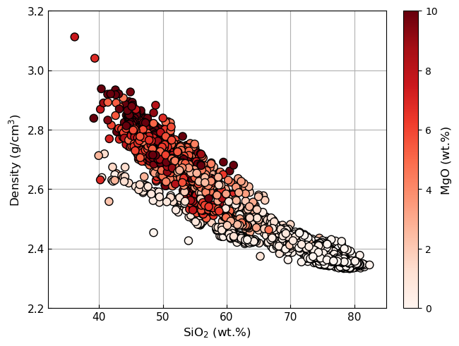

Example Usage
This example shows how DensityX can be used to calculate the density of multiple glass compositions.
[3]:
import pandas as pd
import matplotlib.pyplot as plt
import densityx
[4]:
# Load in Test Dataset
test_data = pd.read_excel("../../tests/test-data.xlsx", header=0)
# Check test_data has correct columns
test_data.head()
[4]:
| Sample_ID | SiO2 | TiO2 | Al2O3 | Fe2O3 | FeO | MgO | CaO | Na2O | K2O | H2O | P | T | |
|---|---|---|---|---|---|---|---|---|---|---|---|---|---|
| 0 | samp. NS-115 | 40.300000 | 0.560000 | 16.240000 | NaN | 5.590000 | 0.730000 | 18.740000 | 12.230000 | 5.220000 | 0 | 5000 | 1100 |
| 1 | samp. NS-115 | 45.600000 | 3.630000 | 15.970000 | NaN | 9.480000 | 4.280000 | 15.680000 | 3.320000 | 0.320000 | 0 | 5000 | 1100 |
| 2 | samp. NS-115 | 46.560000 | 2.180000 | 14.330000 | NaN | 10.620000 | 12.040000 | 10.030000 | 2.810000 | 0.640000 | 0 | 5000 | 1100 |
| 3 | samp. NS-115 | 47.830000 | 2.280000 | 19.910000 | NaN | 7.400000 | 3.180000 | 7.340000 | 6.610000 | 3.120000 | 0 | 5000 | 1100 |
| 4 | samp. NS-115 | 52.902262 | 0.580352 | 13.177704 | NaN | 7.022362 | 12.152315 | 11.602033 | 2.239217 | 0.323754 | 0 | 5000 | 1100 |
[5]:
# Calculate Density
test_densities = densityx.Density(test_data, verbose=True)
# Check test_densities columns
test_densities.head()
[5]:
| Sample_ID | SiO2 | TiO2 | Al2O3 | Fe2O3 | FeO | MgO | CaO | Na2O | K2O | ... | AbsError_K2O | AbsError_MgO | AbsError_Na2O | AbsError_SiO2 | AbsError_Sum | AbsError_TiO2 | density_g_per_cm | density_unc_g_per_cm | density_g_per_L | uncertainty_g_per_L | |
|---|---|---|---|---|---|---|---|---|---|---|---|---|---|---|---|---|---|---|---|---|---|
| 0 | samp. NS-115 | 40.300000 | 0.560000 | 16.240000 | 0.0 | 5.590000 | 0.730000 | 18.740000 | 12.230000 | 5.220000 | ... | 0.032537 | 0.034532 | 0.074199 | 0.123639 | 0.973390 | 0.003063 | 2.639029 | 0.039194 | 2639.029401 | 39.193979 |
| 1 | samp. NS-115 | 45.600000 | 3.630000 | 15.970000 | 0.0 | 9.480000 | 4.280000 | 15.680000 | 3.320000 | 0.320000 | ... | 0.001974 | 0.200368 | 0.019934 | 0.138452 | 1.019456 | 0.019650 | 2.765265 | 0.044050 | 2765.264907 | 44.050046 |
| 2 | samp. NS-115 | 46.560000 | 2.180000 | 14.330000 | 0.0 | 10.620000 | 12.040000 | 10.030000 | 2.810000 | 0.640000 | ... | 0.003742 | 0.534227 | 0.015991 | 0.133987 | 1.152127 | 0.011185 | 2.789576 | 0.052490 | 2789.576072 | 52.489656 |
| 3 | samp. NS-115 | 47.830000 | 2.280000 | 19.910000 | 0.0 | 7.400000 | 3.180000 | 7.340000 | 6.610000 | 3.120000 | ... | 0.020074 | 0.155271 | 0.041394 | 0.151466 | 0.833385 | 0.012873 | 2.626288 | 0.032995 | 2626.287725 | 32.995359 |
| 4 | samp. NS-115 | 52.902262 | 0.580352 | 13.177704 | 0.0 | 7.022362 | 12.152315 | 11.602033 | 2.239217 | 0.323754 | ... | 0.001845 | 0.525458 | 0.012418 | 0.148356 | 1.139317 | 0.002902 | 2.707294 | 0.051285 | 2707.294231 | 51.285103 |
5 rows × 81 columns
[ ]:
# Plot SiO2 against Density
fs = 12
plt.figure(constrained_layout=True)
plt.grid()
sc = plt.scatter(test_densities["Norm_SiO2"], test_densities["density_g_per_cm"],
c=test_densities["Norm_MgO"], cmap="Reds", edgecolor='k', vmax=10, zorder=2, s=64)
# Add colorbar
cbar = plt.colorbar(sc)
cbar.set_label("MgO (wt.%)", fontsize=fs)
# Set axis limits
plt.xlim(32, 85)
plt.ylim(2.2, 3.2)
# Adjust ticks
plt.tick_params(tickdir="in", labelsize=fs-1)
# Set labels
plt.xlabel("SiO$_2$ (wt.%)", fontsize=fs)
plt.ylabel("Density (g/cm$^3$)", fontsize=fs)
plt.show()
